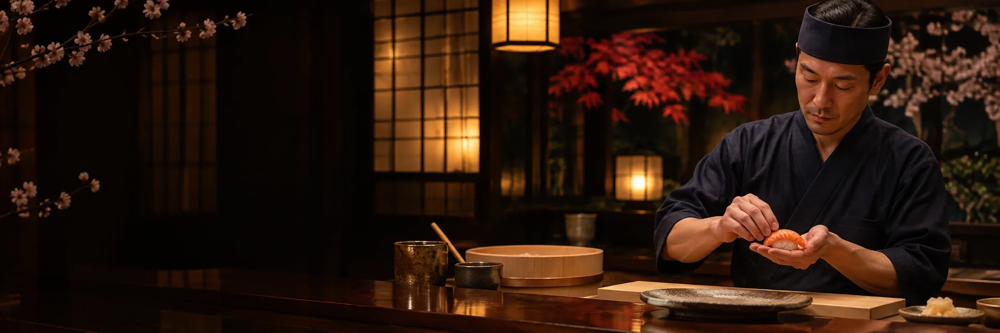
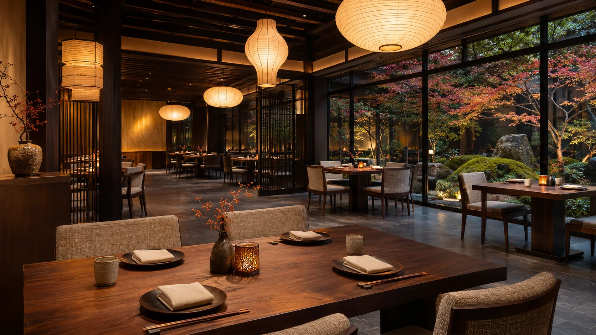
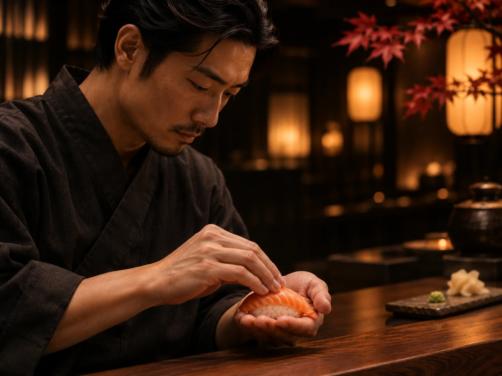

Сезонность
Вкусы в естественном ритме года

Ужин от шефа
Доверить выбор шефу — значит позволить сезону вести вас от первой лёгкой подачи к глубокому финалу.
Учебная концепция · все бизнес-данные вымышленыСезон задаёт настроение, мастерство раскрывает продукт, а последовательность подач складывается в цельный вечер. Здесь Omakase — учебная концепция, а не подтверждённая ресторанная услуга.
Вкусы в естественном ритме года
Точность и уважение к продукту
Баланс каждой подачи
Пять подач, пять оттенков вкуса: от свежести тунца к хрустящей темпуре и мягкому финалу матча. Пример из учебного каталога; состав и аллергены уточняются отдельно.

Тунец ахи, понзу с юдзу, зелёное яблоко и хрустящий рис — прохладная закуска с чистым цитрусовым финалом.
Учебный пример; состав и аллергены проверяйте перед заказом.
Подробнее о блюде ↗
Нигири с тунцом.
Учебный пример; состав и аллергены проверяйте перед заказом.
Подробнее о блюде ↗
Классические нигири с лососем.
Учебный пример; состав и аллергены проверяйте перед заказом.
Подробнее о блюде ↗
Тигровые креветки в лёгком тесте, сезонные овощи и тэнцую с дайконом.
Учебный пример; состав и аллергены проверяйте перед заказом.
Подробнее о блюде ↗
Крем маскарпоне, савоярди с ходзича и пудра из церемониальной матчи.
Учебный пример; состав и аллергены проверяйте перед заказом.
Подробнее о блюде ↗Все цены вымышлены и не являются предложением действующего ресторана.
6 подач · около 90 минут
12 900 ₸Выбрать формат ↗9 подач · около 120 минут
16 900 ₸Выбрать формат ↗12 подач · около 150 минут
24 900 ₸Выбрать формат ↗
Сезонный формат показан как рекомендация концепции. Перед отправкой заявки его можно изменить; отправка не подтверждает бронь.
Выбрать сезонный формат ↗
Точный срез, температура риса, последний штрих перед подачей. Работа за стойкой задаёт ритм всему вечеру — без спешки, с вниманием к каждой детали.
Бронирование Omakase ↗Каждая встреча складывается из сезона, внимания и момента.
Текст учебной концепции · не цитата реального шефа